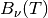

blackbody_nu¶
-
astropy.analytic_functions.blackbody.blackbody_nu(in_x, temperature) [edit on github][source]¶ Calculate blackbody flux per steradian, .
Note
Use
numpy.errstateto suppress Numpy warnings, if desired.Warning
Output values might contain
nanandinf.Parameters: in_x : number, array-like, or
QuantityFrequency, wavelength, or wave number. If not a Quantity, it is assumed to be in Hz.
temperature : number, array-like, or
QuantityBlackbody temperature. If not a Quantity, it is assumed to be in Kelvin.
Returns: flux :
QuantityBlackbody monochromatic flux in .
Raises: ValueError
Invalid temperature.
ZeroDivisionError
Wavelength is zero (when converting to frequency).